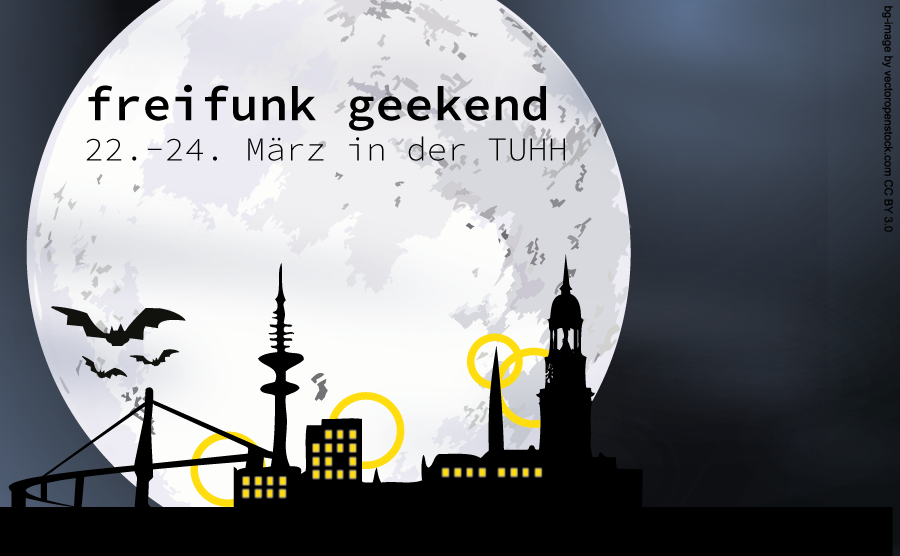

Freifunk Geekend 22.-24. März
Kreatives Zusammenarbeiten and der TUHH
An der TUHH stehen Räume für kreatives Zusammenarbeiten offen. Besucher sind jederzeit willkommen! Es gibt: Getränke, Sa und So offenes Buffet, Schlafmöglichkeiten sind in begrenzter Anzahl vorhanden. Wir freuen uns auf euer zahlreiches Erscheinen!
Mehr Infos und eine Liste zum Anmelden gibt im Wiki
Was ist Freifunk?
Freifunk ist eine nicht-kommerzielle Initiative für freie Funk- und Datennetzwerke.
In vielen deutschen Städten gibt es bereits Freifunknetze.
Freifunk steht jedem Menschen offen, sei es als Nutzer_in oder als aktive_r Unterstützer_in
durch eigene Freifunk-Knoten.
Als Freifunk-Knoten dient ein dafür vorbereiteter WLAN-Router
oder ein anderes WLAN fähiges Gerät.
Die Vorbereitung ist einfach selbst durchzuführen,
oder durch Hilfestellung unserer Gemeinschaft, z.B. in Form von vorbereiteten
WLAN-Routern zum Selbstkostenpreis.
Das Freifunk-Netz entsteht ohne zentrale Infrastruktur, ist nicht kommerziell
und lebt von einer aktiven Gemeinschaft.
Wo ist freifunk?
(Einfach mittels Doppelklick, dem Mausrad, oder den +/- Buttons in die Karte hineinzoomen)
Wie kann ich mitmachen?
Alle Menschen können Freifunker_innen werden, besondere technische Kenntnisse sind nicht notwendig. Es gibt viele Möglichkeiten mitzuwirken:
- Werde ein Teil des Netzwerks, indem du bei dir im Haus einen Freifunk-Knoten aufstellst.
Informationen zu empfohlenen Routern und der speziellen Freifunk-Firmware findest du im Wiki. - Komm zu unseren Treffen: jeden Montag um 19:00 Uhr in den Räumen des CCCHH
Wenn Ihr mit ÖPNV anreist, nehmt die U3 bis "Mundsburg". Von dort sind es ca. 8 Minuten zu Fuß. Der Eingang zur Humboldtstraße 53 liegt in einem Innenhof, den Ihr durch eine Tor-Einfahrt erreicht. - Du kannst auch unsere Mailingliste abonnieren oder uns im IRC finden.
- Besuche uns auch auf Facebook oder indenti.ca.